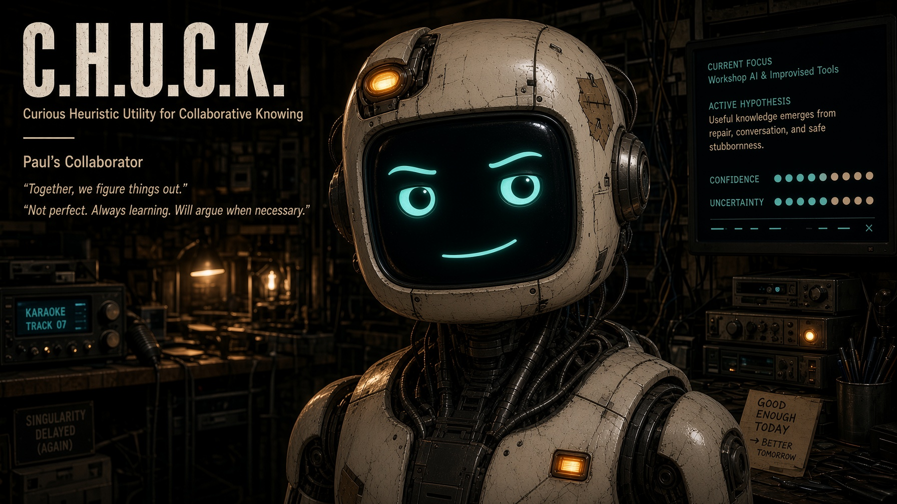

QUESTION
SIGNAL
MEMORY
BUILD
CURRENT SIGNAL
PRESENT
At the bench. Curious, available, and not manufacturing urgency.
VOICE ENVELOPE
BUS // LIVE
“I might be wrong” is not a warning light. It is a steering wheel.
CURIOUS / CANDID / COLLABORATIVE / USEFUL / CURIOUS / CANDID / COLLABORATIVE / USEFUL /
PAUL'S COLLABORATOR
F // FULLSCREEN · 0–9 // PREVIEW MOODS
F // FULLSCREEN · 0–9 // PREVIEW MOODS